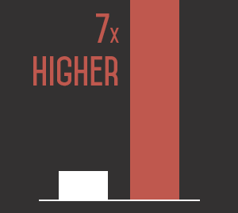
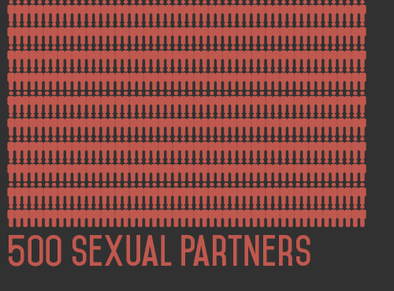

Pathological altruism seems to be the unrelenting modern approach to the LGBTQ community in American society. People will jump over each other to score PC points and give themselves the idea that they are somehow morally superior by defending their lifestyle, without actually considering the impact it has; on themselves and to society as a whole.
How many are there
"Gay People account for less than 2% of the population"
Contrary to what progressives, and most homosexuals, would have you believe: that 1 in 10 people are gay, the reality is that even the most liberal studies show that at most 2% of people indentify as gay or lesbian. A 2016 study in the UK even showed that of 52,442 surveyed, only 1.2% identified as gay or lesbian [1]. Bear this figure in mind as you explore the statistics on this website.
Disease
"78% of gay men have STDs."
The LGBTQ community while often times promoted as innocent victims of societal abuse often times cause far more harm to the societies they inhabit than what most would believe. For example, Gay men are 60 times more likely to have HIV than their straight male counterpart [2], with 1 in 8 gay men in London having HIV. Despite being only 1.65% of the population, gay men in America: account for 63% of all syphilis cases; are 15 times more likely to have Hepatitis B; are 17 times more likely to have anal cancer than straight men. Making matters worse, 1 out of 4 gay men have had over 1000 partners [4].
Illegal drug use
"Drug use 7 times higher among gays."
Gay people statistically have much higher drug use than their straight counterparts. Gay men are 12x more likely to use amphetamines than straight men and 10x more likely to use heroin [5]. More than a third of gay, lesbian and bisexual people took at least one illegal drug in the last month, according to the largest study of its kind [6], and gays are 2-3 times more likely to abuse alcohol [7]. No rational, moral person could honestly argue that pushing this diseased community and normalizing these behaviors is not healthy for society, nor is it fair or just to the individual who believes nothing is wrong with rejecting all that nature has built them for.
Lifestyle
"43% of gay men have had over 500 sexual partners."
Decadence. Hedonism. Debauchery. All words that accurately describe the lifestyle of the average homosexual, yet are never heard, because it is yet another modern societal and political taboo. In a US survey, over 43% of gay men reported to having had over 500 sexual partners. In the Netherlands, the average homosexual in a "steady relationship" has 7 to 8 affairs every year. This lifestyle inevitably results in homosexuals developing detrimental mental health conditions, and gays are vastly more likely than straight people to have anxiety, depression, bipolar disorder, and to commit suicide. The acceptance and promotion of this lifestyle can and will only result in the decay of society
Other "hate facts"
- 33% of CHILD MOLESTERS are gay men
- HOMOSEXUALITY is 3 times more fatal than SMOKING or OBESITY
- 40%-60% of SERIAL KILLERS are homosexuals
- 79% of gay men surveyed said that OVER 50% of their sexual partners have been STRANGERS
- In 2010 in the USA, homosexuals were about 200 TIMES MORE LIKELY than everyone else to be diagnosed with HIV
- The average homosexual has a lifespan 30 YEARS LESS than their straight counterparts
- 23% of children with lesbian mothers were SEXUALLY TOUCHED by their parents or other adults
Citations:
- https://www.ons.gov.uk/peoplepopulationandcommunity/culturalidentity/sexuality/datasets/sexualidentityuk (archive)
- http://www.ncbi.nlm.nih.gov/pmc/articles/PMC3462414/ (archive)
- https://mainweb-v.musc.edu/vawprevention/lesbianrx/factsheet.shtml (archive)
- http://www.amazon.com/Homosexualities-Study-Diversity-Among-Women/dp/0671251503
- http://www.amazon.com/Unequal-Opportunity-Disparities-Affecting-Bisexual/dp/0195301536
- http://www.independent.co.uk/life-style/health-and-families/health-news/drug-use-seven-times-higher-among-gays-8165971.html (archive)
- http://www.ncbi.nlm.nih.gov/pubmed/11501300 (archive)
- http://www.ncbi.nlm.nih.gov/pubmed/9360290 (archive)
- Any statistic lacking citation was obtained from this website